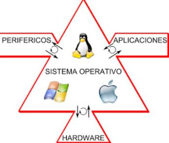

Tema 1.2 Características de los Sistemas Operativos
Principales Características
Definir la interfaz de usuario
Compartir el hardware entre usuarios
Permitir al usuario compartir los datos entre ellos
Planificar recursos entre usuarios
Facilitar la entrada/salida
Recuperarse de los errores
Principales Recursos Administrativos por los Sistemas Operativos

Procesadores
Controla la operación del computador y el procesamiento de datos.
Consta de dos funciones:
Traer las instrucciones desde la memoria, una a la vez.
Ejecución de cada instrucción
Medios de Almacenamiento
Los programas y datos deben estar almacenados en la memoria principal.
El administrador de memoria lleva un registro de las partes que están en uso.
Libra espacios de procesos finalizados.
Programas almacenados en caché se ejecutan más rápido.
Dispositivos I/O
Intercambio de datos directamente con el procesador.
En algunos casos, tienen acceso directo a la memoria.
Interrupción de ejecución para mejorar la eficiencia.
La interrupción se realiza en una serie de pasos.
Datos
Sistema Operativo com interfaz de usuario
Permite la comunicación interactiva con el sistema.
Intérprete de datos o Shell.
Se comporta como un ciclo infinito que repite las instrucciones:
Espera la orden del usuario
Analiza la orden.
Conclusión de la orden.
Compartir Datos entre Usuarios
Derecho de acceso y gestión de accesos simultaneos:
Ninguno
Conocimiento
Ejecución
Lectura
Adición
Actualización
Cambio de protección
Borrado
Grupos de usuarios
Usuarios especificos
Todos
Administrador de Sistema Operativo
Es un conjunto de instrucciones que representan las "llamadas al sistema".
Usuarios
El Sistema Operativo asocia esta definicióncon el concepto "Nombre de cuenta". El sistema de seguridadesta basadoen la identidad "Usuario". El "súper usuario" no posee restricciones.